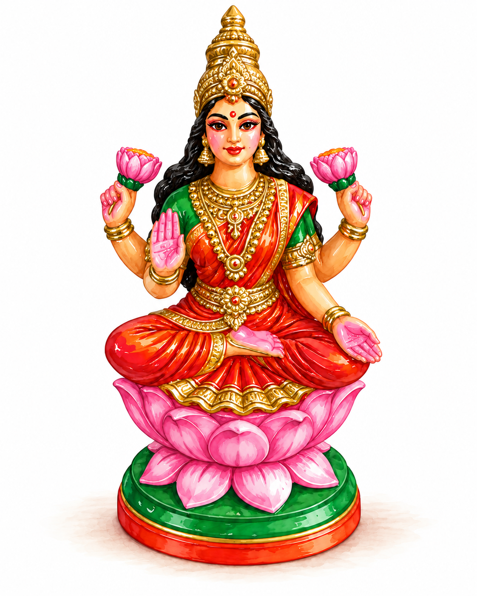

Lakshmi: The Goddess of Wealth, Fortune, and Prosperity

Lakshmi is the Hindu goddess of wealth, prosperity, good fortune, and abundance. She is usually depicted sitting on a pink lotus, dressed in red or gold, often with gold coins flowing from one of her hands. She is also the consort of Vishnu, one of Hinduism's principal deities, associated with preserving cosmic order.
One of the best-known stories about Lakshmi's origins comes from the Samudra Manthan, or the Churning of the Ocean of Milk. More on that rather elaborate story when you click on “Dashavatar.”
Symbols of prosperity
As with most Hindu deities, almost every detail of Lakshmi's appearance means something. The lotus she sits on represents purity and the ability to enjoy material wealth without becoming overly attached to it. The pink lotuses she holds represent beauty, prosperity, and spiritual growth. One hand is raised in a gesture of blessing and reassurance, while the other is extended downward, often depicted with gold coins flowing from her palm.
Wealth in motion
That downward-facing hand is particularly interesting. For a goddess whose entire domain is wealth and prosperity, it is important that she is depicted giving money away rather than holding on to it. There is quite a bit of emphasis in Hindu tradition on dāna (charitable giving) and seva (selfless service).
The idea is that if you are fortunate enough to have wealth, you have a responsibility to share it, and that generosity itself invites prosperity. Wealth is meant to circulate rather than simply accumulate—there is probably an entire economics discussion to be had here.
Her form reminds people that if you want prosperity to come your way, you should be willing to let some of it flow to others as well.